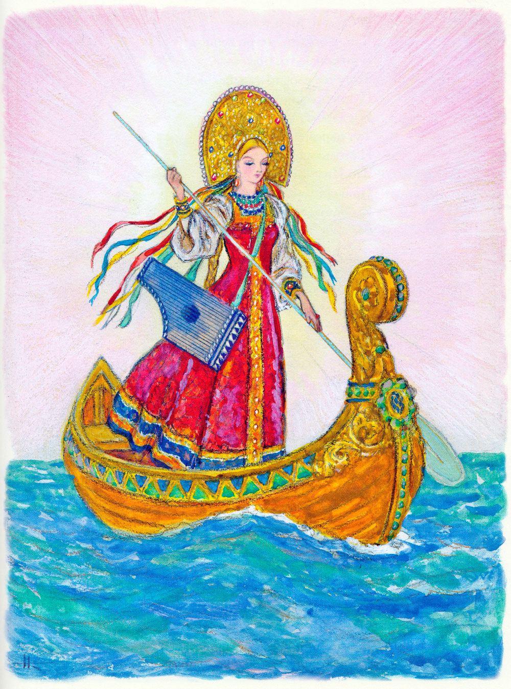

Конёк-горбунок. Часть 2. Продолжение.
Петр Ершов
Через три потом недели
Вечерком одним сидели
В царской кухне повара
И служители двора;
Попивали мед из жбана
Да читали Еруслана.
"Эх! - один слуга сказал, -
Как севодни я достал
От соседа чудо-книжку!
В ней страниц не так чтоб слишком,
Да и сказок только пять,
А уж сказки - вам сказать,
Так не можно надивиться;
Надо ж этак умудриться!"
Тут все в голос: "Удружи!
Расскажи, брат, расскажи!" -
"Ну, какую ж вы хотите?
Пять ведь сказок; вот смотрите:
Перва сказка о бобре,
А вторая о царе;
Третья... дай бог память... точно!
О боярыне восточной;
Вот в четвертой: князь Бобыл;
В пятой... в пятой... эх, забыл!
В пятой сказке говорится...
Так в уме вот и вертится..." -
"Ну, да брось ее!" - "Постой!" -
"О красотке, что ль, какой?" -
"Точно! В пятой говорится
О прекрасной Царь-девице.
Ну, которую ж, друзья,
Расскажу севодни я?" -
"Царь-девицу! - все кричали. -
О царях мы уж слыхали,
Нам красоток-то скорей!
Их и слушать веселей".
И слуга, усевшись важно,
Стал рассказывать протяжно:
"У далеких немских стран
Есть, ребята, окиян.
По тому ли окияну
Ездят только басурманы;
С православной же земли
Не бывали николи
Ни дворяне, ни миряне
На поганом окияне.
От гостей же слух идет,
Что девица там живет;
Но девица не простая,
Дочь, вишь, месяцу родная,
Да и солнышко ей брат.
Та девица, говорят,
Ездит в красном полушубке,
В золотой, ребята, шлюпке
И серебряным веслом
Самолично правит в нем;
Разны песни попевает
И на гусельцах играет..."
Спальник тут с полатей скок -
И со всех обеих ног
Во дворец к царю пустился
И как раз к нему явился;
Стукнул крепко об пол лбом
И запел царю потом:
"Я с повинной головою,
Царь, явился пред тобою,
Не вели меня казнить,
Прикажи мне говорить!" -
"Говори, да правду только,
И не ври, смотри, нисколько!" -
Царь с кровати закричал.
Хитрый спальник отвечал:
"Мы севодни в кухне были,
За твое здоровье пили,
А один из дворских слуг
Нас забавил сказкой вслух;
В этой сказке говорится
О прекрасной Царь-девице.
Вот твой царский стремянной
Поклялся твоей брадой,
Что он знает эту птицу, -
Так он назвал Царь-девицу, -
И ее, изволишь знать,
Похваляется достать".
Спальник стукнул об пол снова.
"Гей, позвать мне стремяннова!" -
Царь посыльным закричал.
Спальник тут за печку стал.
А посыльные дворяна
Побежали по Ивана;
В крепком сне его нашли
И в рубашке привели.
Царь так начал речь: "Послушай,
На тебя донос, Ванюша.
Говорят, что вот сейчас
Похвалялся ты для нас
Отыскать другую птицу,
Сиречь молвить, Царь-девицу..." -
"Что ты, что ты, бог с тобой! -
Начал царский стремянной. -
Чай, с просонков я, толкую,
Штуку выкинул такую.
Да хитри себе как хошь,
А меня не проведешь".
Царь, затрясши бородою:
"Что? Рядиться мне с тобою? -
Закричал он. - Но смотри,
Если ты недели в три
Не достанешь Царь-девицу
В нашу царскую светлицу,
То, клянуся бородой!
Ты поплатишься со мной!
На правеж - в решетку - на кол!
Вон, холоп!" Иван заплакал
И пошел на сеновал,
Где конек его лежал.
"Что, Иванушка, невесел?
Что головушку повесил? -
Говорит ему конек. -
Аль, мой милый, занемог?
Аль попался к лиходею?"
Пал Иван к коньку на шею,
Обнимал и целовал.
"Ох, беда, конек! - сказал. -
Царь велит в свою светлицу
Мне достать, слышь, Царь-девицу.
Что мне делать, горбунок?"
Говорит ему конек:
"Велика беда, не спорю;
Но могу помочь я горю.
Оттого беда твоя,
Что не слушался меня.
Но, сказать тебе по дружбе,
Это - службишка, не служба;
Служба все, брат, впереди!
Ты к царю теперь поди
И скажи: "Ведь для поимки
Надо, царь, мне две ширинки,
Шитый золотом шатер
Да обеденный прибор -
Весь заморского варенья -
И сластей для прохлажденья",
Вот Иван к царю идет
И такую речь ведет:
"Для царевниной поимки
Надо, царь, мне две ширинки,
Шитый золотом шатер
Да обеденный прибор -
Весь заморского варенья -
И сластей для прохлажденья". -
"Вот давно бы так, чем нет", -
Царь с кровати дал ответ
И велел, чтобы дворяна
Все сыскали для Ивана,
Молодцом его назвал
И "счастливый путь!" сказал.
На другой день, утром рано,
Разбудил конек Ивана:
"Гей! Хозяин! Полно спать!
Время дело исправлять!"
Вот Иванушка поднялся,
В путь-дорожку собирался,
Взял ширинки и шатер
Да обеденный прибор -
Весь заморского варенья -
И сластей для прохлажденья;
Все в мешок дорожный склал
И веревкой завязал,
Потеплее приоделся,
На коньке своем уселся;
Вынул хлеба ломоток
И поехал на восток
По тое ли Царь-девицу.
Едут целую седмицу,
Напоследок, в день осьмой,
Приезжают в лес густой.
Тут сказал конек Ивану:
"Вот дорога к окияну,
И на нем-то круглый год
Та красавица живет;
Два раза она лишь сходит
С окияна и приводит
Долгий день на землю к нам.
Вот увидишь завтра сам".
И; окончив речь к Ивану,
Выбегает к окияну,
На котором белый вал
Одинешенек гулял.

Тут Иван с конька слезает,
А конек ему вещает:
"Ну, раскидывай шатер,
На ширинку ставь прибор
Из заморского варенья
И сластей для прохлажденья.
Сам ложися за шатром
Да смекай себе умом.
Видишь, шлюпка вон мелькает..
То царевна подплывает.
Пусть в шатер она войдет,
Пусть покушает, попьет;
Вот, как в гусли заиграет, -
Знай, уж время наступает.
Ты тотчас в шатер вбегай,
Ту царевну сохватай
И держи ее сильнее
Да зови меня скорее.
Я на первый твой приказ
Прибегу к тебе как раз;
И поедем... Да, смотри же,
Ты гляди за ней поближе;
Если ж ты ее проспишь,
Так беды не избежишь".
Тут конек из глаз сокрылся,
За шатер Иван забился
И давай диру вертеть,
Чтоб царевну подсмотреть.
Ясный полдень наступает;
Царь-девица подплывает,
Входит с гуслями в шатер
И садится за прибор.

"Хм! Так вот та Царь-девица!
Как же в сказках говорится, -
Рассуждает стремянной, -
Что куда красна собой
Царь-девица, так что диво!
Эта вовсе не красива:
И бледна-то, и тонка,
Чай, в обхват-то три вершка;
А ножонка-то, ножонка!
Тьфу ты! словно у цыпленка!
Пусть полюбится кому,
Я и даром не возьму".
Тут царевна заиграла
И столь сладко припевала,
Что Иван, не зная как,
Прикорнулся на кулак
И под голос тихий, стройный
Засыпает преспокойно.
Запад тихо догорал.
Вдруг конек над ним заржал
И, толкнув его копытом,
Крикнул голосом сердитым:
"Спи, любезный, до звезды!
Высыпай себе беды,
Не меня ведь вздернут на кол!"
Тут Иванушка заплакал
И, рыдаючи, просил,
Чтоб конек его простил:
"Отпусти вину Ивану,
Я вперед уж спать не стану". -
"Ну, уж бог тебя простит! -
Горбунок ему кричит. -
Все поправим, может статься,
Только, чур, не засыпаться;
Завтра, рано поутру,
К златошвейному шатру
Приплывет опять девица
Меду сладкого напиться.
Если ж снова ты заснешь,
Головы уж не снесешь".
Тут конек опять сокрылся;
А Иван сбирать пустился
Острых камней и гвоздей
От разбитых кораблей
Для того, чтоб уколоться,
Если вновь ему вздремнется.
На другой день, поутру,
К златошвейному шатру
Царь-девица подплывает,
Шлюпку на берег бросает,
Входит с гуслями в шатер
И садится за прибор...
Вот царевна заиграла
И столь сладко припевала,
Что Иванушке опять
Захотелося поспать.
"Нет, постой же ты, дрянная! -
Говорит Иван вставая. -
Ты в другоредь не уйдешь
И меня не проведешь".
Тут в шатер Иван вбегает,
Косу длинную хватает...
"Ой, беги, конек, беги!
Горбунок мой, помоги!"
Вмиг конек к нему явился.
"Ай, хозяин, отличился!
Ну, садись же поскорей
Да держи ее плотней!"
Вот столицы достигает.
Царь к царевне выбегает,
За белы руки берет,
Во дворец ее ведет
И садит за стол дубовый
И под занавес шелковый,
В глазки с нежностью глядит,
Сладки речи говорит:
"Бесподобная девица,
Согласися быть царица!
Я тебя едва узрел -
Сильной страстью воскипел.
Соколины твои очи
Не дадут мне спать средь ночи
И во время бела дня -
Ох! измучают меня.
Молви ласковое слово!
Все для свадьбы уж готово;
Завтра ж утром, светик мой,
Обвенчаемся с тобой
И начнем жить припевая".
А царевна молодая,
Ничего не говоря,
Отвернулась от царя.
Царь нисколько не сердился,
Но сильней еще влюбился;
На колен пред нею стал,
Ручки нежно пожимал
И балясы начал снова:
"Молви ласковое слово!
Чем тебя я огорчил?
Али тем, что полюбил?
"О, судьба моя плачевна!"
Говорит ему царевна:
"Если хочешь взять меня,
То доставь ты мне в три дня
Перстень мой из окияна". -
"Гей! Позвать ко мне Ивана!" -
Царь поспешно закричал
И чуть сам не побежал.
Вот Иван к царю явился,
Царь к нему оборотился
И сказал ему: "Иван!
Поезжай на окиян;
В окияне том хранится
Перстень, слышь ты, Царь-девицы.
Коль достанешь мне его,
Задарю тебя всего".-
"Я и с первой-то дороги
Волочу насилу ноги;
Ты опять на окиян!" -
Говорит царю Иван.
"Как же, плут, не торопиться:
Видишь, я хочу жениться! -
Царь со гневом закричал
И ногами застучал. -
У меня не отпирайся,
А скорее отправляйся!"
Тут Иван хотел идти.
"Эй, послушай! По пути, -
Говорит ему царица,-
Заезжай ты поклониться
В изумрудный терем мой
Да скажи моей родной:
Дочь ее узнать желает,
Для чего она скрывает
По три ночи, по три дня
Лик свой ясный от меня?
И зачем мой братец красный
Завернулся в мрак ненастный
И в туманной вышине
Не пошлет луча ко мне?
Не забудь же!" - "Помнить буду,
Если только не забуду;
Да ведь надо же узнать,
Кто те братец, кто те мать,
Чтоб в родне-то нам не сбиться".
Говорит ему царица:
"Месяц - мать мне, солнце - брат" -
"Да, смотри, в три дня назад!" -
Царь-жених к тому прибавил.
Тут Иван царя оставил
И пошел на сеновал,
Где конек его лежал.
"Что, Иванушка, невесел?
Что головушку повесил?" -
Говорит ему конек.
"Помоги мне, горбунок!
Видишь, вздумал царь жениться,
Знашь, на тоненькой царице,
Так и шлет на окиян, -
Говорит коньку Иван. -
Дал мне сроку три дня только;
Тут попробовать изволь-ка
Перстень дьявольский достать!
Да велела заезжать
Эта тонкая царица
Где-то в терем поклониться
Солнцу, Месяцу, притом
И спрошать кое об чем..."
Тут конек: "Сказать по дружбе,
Это - службишка, не служба;
Служба все, брат, впереди!
Ты теперя спать поди;
А назавтра, утром рано,
Мы поедем к окияну".
На другой день наш Иван,
Взяв три луковки в карман,
Потеплее приоделся,
На коньке своем уселся
И поехал в дальний путь...
Дайте, братцы, отдохнуть!
Продолжение следует